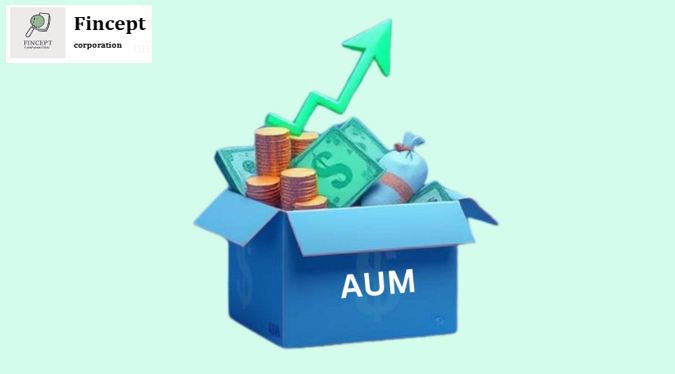

What is Asset Under Management (AUM)?
What is Asset Under Management (AUM)?
Asset Under Management (AUM) is the total market value of the investments managed by a particular Mutual Fund or an asset management company (AMC). It represents the market value of the combined assets of all the schemes managed by the fund house.
AUM is directly handled by fund houses. Fund managers supervise the performance of these assets and make investment decisions to achieve the investment objectives of the fund. AUM can be considered as a performance gradient and size parameter of a fund house.
The exact value of Asset Under Management includes banks deposits, Mutual Funds, and cash reserves for a specific fund house. Brokerage commissions are also added to the total asset base under management of a fund house. These fees are also often calculated as a percentage of the total asset under management.
Fund houses that deal exclusively with the money market usually do not carry a large AUM, given that these organizations invest in liquid assets. Usually, the funds that carry more assets under management are more liquid in nature.
Now that you know the AUM meaning, understand its impact on mutual funds.
Importance of AUM in Mutual Funds
Assets under management are important because:
- Shows the size of a fund
The AUM provides insights into the size and scale of a mutual fund. A higher AUM signifies that the mutual fund has a strong market presence and is likely to attract more investors.
- Impacts Mutual Fund's Overall Performance
The AUM can have a direct impact on the fund's performance. If a fund is very large, it may be challenging for the fund manager to find suitable investment opportunities that can generate significant returns without negatively impacting the fund's performance due to the large size of investments.
Mutual funds can be having higher flexibility to benefit from other investment opportunities and yield more returns.
- Affects Mutual Fund Fees
A fund's AUM can have a large impact on the fees that an investor usually pays to invest in the mutual fund. Larger funds generally have a lower expense ratio due to economies of scale, which can benefit investors by providing lower costs.
- Impact of High AUM on Mutual Funds
Mutual funds having a large AUM do not necessarily translate to better performance. There is no direct correlation between a fund's AUM and its returns. The performance of Mutual Funds depends upon the expertise of the fund manager, investment strategy, and market conditions.
According to a report by Morningstar, in 2022, funds managing over 170 funds had an AUM of less than Rs. 500 Crore. This shows that even funds with a relatively smaller AUM can perform well and generate significant returns.
Comparing 361 schemes already in 2022, proved that 176 funds had an AUM of less than Rs. 500 Crore, from which only 90% had an AUM of less than Rs. 50 Crore. However, it was observed that the total AUM of these funds grew by a significant percentage during the year. This highlights the potential of smaller funds to generate high returns.
A growing AUM attracts more investors, while a declining AUM may lead to redemptions. Investors should consider the trend of AUM growth or decline while evaluating a mutual fund.
A fund's asset under management can also have an impact on its investment strategy. Larger funds may have more flexibility to invest in a wider range of securities, while smaller funds may be limited to certain types of investments.
Let's take a look at the importance of asset retention for Mutual Funds with respect to various investment options.
- Equity Funds
Equity funds should offer a good return and outperform the benchmark index through market highs and lows. Equity funds depend less on AUM and more on the asset manager's skill to boost its returns.
- Debt Funds
These are one of the most common types of debt schemes. These funds aim to provide stable returns by investing in fixed-income securities such as bonds, debentures, and government securities. Debt funds are less volatile than equity funds and are suitable for investors with a low-risk appetite.
- Small-cap Funds
Small-cap funds usually do not depend on Asset Under Management by a significant margin. These are only affected when the assets grow beyond a significant point, namely when fund houses become major shareholders in a particular stock or company.
Small-cap funds often avoid calculating AUM and invest in SIPs instead of larger investments.
- Large-cap Funds
The returns earned from large-cap funds primarily depend on the yields provided by the market. It usually does not depend on the Asset Under Management. There are several cases where companies of a smaller asset class have generated significantly more dividends, despite their shareholders acquiring significantly fewer stocks of these institutions when compared to companies with more assets.
It should be noted that a high value of asset under management does not always mean higher returns generated by the respective Mutual Funds. The performance of Mutual Funds depends upon the dexterity of the concerned portfolio manager and his ability to gain market advantage through calculated predictions and smart investment choices.
Since the NAV of Mutual Funds having a low AUM is relatively lower, investors can make huge capital gains by investing in such schemes.
Calculation of AUM
The process to calculate AUM may vary depending on a particular fund house. It usually rises when investments offer a consistent positive return for a long period.
Positive performance attracts new assets and more investments, which increases the total amount of assets for that organization. However, the asset value decreases every time the market plummets or investors redeem his or her shares.
The total value of assets under management is constantly fluctuating, depending upon the market performance of the portfolio assets. The net changes in the value of AUM are reflected at the end of trading when the market closes for the day.
The total valuation of an asset management company is crucial information for all investors so as to determine the rate of profitability earned if invested in such Mutual Funds.
AUM and Expense Ratio
The total amount deducted from the returns of Mutual Funds is used to regulate smooth working operations and ensure proper administration and management of the same. These overheads are known as the expense ratio incurred, specific to each Mutual Fund.
The expense ratio of a specific fund depends on the size of the AUM, as a higher value of assets requires more time and effort for optimal management.
Thus, AUM has a direct relation with the expense ratio levied by Mutual Funds, implying higher charges incurred while investing in Mutual Funds of a relatively larger size. However, the SEBI regulations stipulate that the expense ratio of a Mutual Funds has to be strictly less than its AUM.
Difference Between AUM and NAV
- AUM is basically the total market value of all the assets held within a mutual fund. It can include stocks, bonds, cash, etc. NAV, on the other hand, is the market value of securities divided by the total number of units on a certain given date.
- AUM can fluctuate attention based on the performance of the fund's underlying assets. NAV is usually computed at the end of every trading day, and it may change daily on the basis of asset performance.
- AUM is used to assess the mutual fund's size to investors. NAV is used for determining the per-unit value of the fund for purchasing/selling shares.